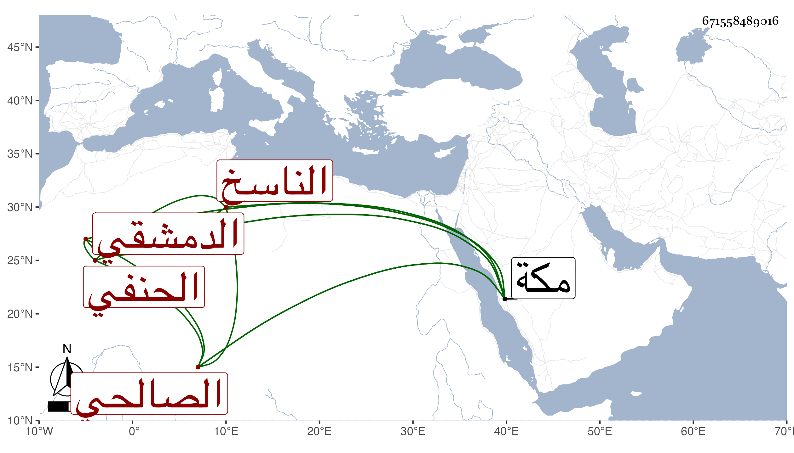

0902Sakhawi.DawLamic.ITO20230111-ara1.EIS1600.671558489016
Biography ID: 671558489016
193
أبو بكر بن محمد بن أحمد الركن أو التقي عبد الله الدمشقي الصالحي الحنفي الناسخ ويعرف في بلده بابن الرفا وهي كانت حرفته . قطن مكة وقتا وناب في مقام الحنفية بها وكتب هناك الكثير ومن ذلك البخاري ومسلم في مجلد ولازمني في سماع الكثير وخطه جيد وشيبته نيرة مع خير وسكون واستمر بمكة حتى مات في أواخر ذي القعدة أو أول ذي الحجة سنة تسع وثمانين رحمه الله وإيانا .
